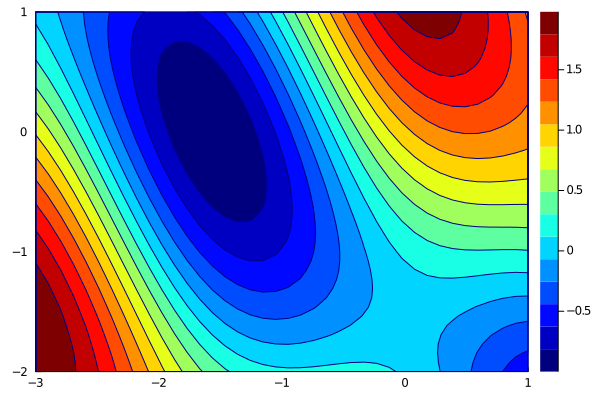
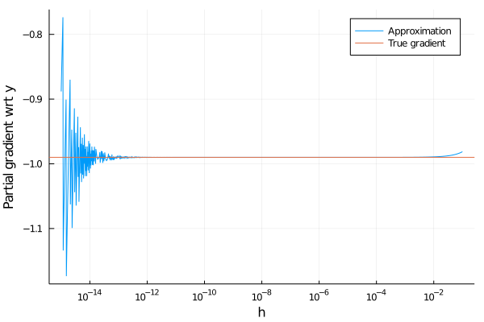

Visualization of gradients
For the numerical experiments, we will consider the following function
\[f(x) = \sin(x_1 + x_2) + \cos(x_1)^2\]
on domain $[-3,1]\times [-2,1]$.
Write a function g(x) which computes the derivative of $f$ at a point $x$.
Plot the contours of $f$ on the given domain. Use the optional argument color = :jet for better visualization.
Solution:
Function f(x) takes as an input a vector of two dimensions and returns a scalar. Therefore, the gradient is a two-dimensional vector, which we create by [?; ?]. Its components are computed from the chain rule.
f(x) = sin(x[1] + x[2]) + cos(x[1])^2
g(x) = [cos(x[1] + x[2]) - 2*cos(x[1])*sin(x[1]); cos(x[1] + x[2])]We use the Plots package for plotting. We create the discretization xs and ys of both axis and then call the contourf function. Since the third argument of contourf requires a function of two variables, we need to modify f into f_mod.
using Plots
xs = range(-3, 1, length = 40)
ys = range(-2, 1, length = 40)
f_mod = (x, y) -> f([x; y])
contourf(xs, ys, f_mod, color = :jet)
Computation of gradients
The simplest way to compute the gradients is to use a finite difference approximation. It replaces the limit in
\[f'(x) = \lim_{h\to 0}\frac{f(x+h)-f(x)}{h}\]
by fixing some $h$ and approximates the gradient by
\[f'(x) \approx \frac{f(x+h)-f(x)}{h}.\]
Write a function finite_difference which computes the approximation of $f'(x)$ by finite differences. The inputs are a function $f:\mathbb R\to\mathbb R$ and a point $x\in\mathbb{R}$. It should have an optional input $h\in\mathbb{R}$, for which you need to choose a reasonable value.
Solution:
We just need to rewrite the formula above. Since the argument h is optional, it should be after ;. Its good default value is anything between $10^{-10}$ and $10^{-5}$. We specify x::Real as a sanity check for the case when a function of more variables is passed as input.
finite_difference(f, x::Real; h=1e-8) = (f(x+h) - f(x)) / hThis way of computing the gradient has two disadvantages:
- It is slow. For a function of $n$ variables, we need to evaluate the function at least $n+1$ times to get the whole gradient.
- It is not precise. We will show this in the next example.
Fix a point $x=(-2,-1)$. For a proper discretization of $h\in [10^{-15}, 10^{-1}]$ compute the finite difference approximation of the partial derivative of $f$ with respect to the second variable.
Plot the dependence of this approximation on $h$. Add the true derivative computed from g.
Solution:
To compute the partial derivative with respect to the second argument, we need to fix the first argument and vary only the second one. The resulting function is f_y. We store all the values of $h$ in hs. When the orders of magnitude are so different, logarithmic scale should be used. For this reason, we create a uniform discretization of the interval $[-15,-1]$ and then use it as an exponent.
x = [-2; -1]
f_y = y -> f([x[1]; y])
hs = 10. .^(-15:0.01:-1)It is possible to use a for loop to compute all finite difference approximations, but there is a more efficient way. Then [? for h in hs] runs the function ? for all h in hs and stores the results in an array with the same length as hs. Since we need to get finite differences, the function ? will be replaced by finite_difference(f_y, x[2]; h=h).
fin_diff = [finite_difference(f_y, x[2]; h=h) for h in hs]The true gradient is computed by g(x). It returns a vector of length two. Since we need only the partial derivative with respect to the second component, we select it by adding [2].
true_grad = g(x)[2]It is possible to call plot twice (the second call would be plot!). However, we concatenate the true gradient true_grad and its finite difference approximation fin_diff by hcat. It is also possible to use [? ?] but not [?, ?] or [?; ?] (try it). To get the same shape of the arrays, we need to repeat true_grad from a scalar to a vector of the same length as fin_diff. Since repeat requires the input to be an array, we need to create it by [true_grad].
data = hcat(fin_diff, repeat([true_grad], length(fin_diff)))
plot(hs, data,
xlabel = "h",
ylabel = "Partial gradient wrt y",
label = ["Approximation" "True gradient"],
xscale = :log10,
)
We see that the approximation is good if the value $h$ is not too small or too large. It cannot be too large because the definition of the gradient considers the limit to zero. It cannot be too small because then the numerical errors kick in. This is connected with machine precision, which is most vulnerable to subtraction of two numbers of almost the same value. A simple example shows
\[(x + h)^2 - x^2 = 2xh + h^2\]
but the numerical implementation
julia> x = 1;
julia> h = 1e-13;
julia> (x+h)^2 - x^2
1.9984014443252818e-13
julia> 2*x*h + h^2
2.0000000000001e-13gives an error already on the third decimal point.
Finally, we show how the gradients look like.
Plot the contours of $f$ and its gradient at $(-2,-1)$.
Solution:
We use the same functions as before. Since we want to add a line, we use plot! instead of plot. We specify its parameters in an optional argument line = (:arrow, 4, :black). These parameters add the pointed arrow, the thickness and the colour of the line. Since we do not want any legend, we use label = "".
x = [-2; -1]
x_grad = g(x)
contourf(xs, ys, (x, y) -> f([x; y]), color = :jet)
plot!([x[1]; x[1]+0.25*x_grad[1]], [x[2]; x[2]+0.25*x_grad[2]],
line = (:arrow, 4, :black),
label = "",
)
The gradient is perpendicular to the contour lines. This makes perfect sense. Since the gradient is the direction of steepest ascent, and since the contours have constant values, it needs to be like this. Try this with different values of $x$.